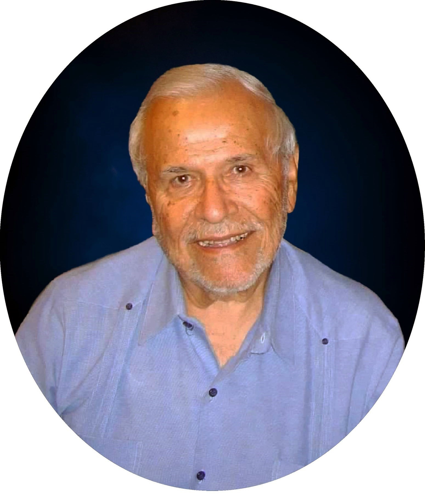
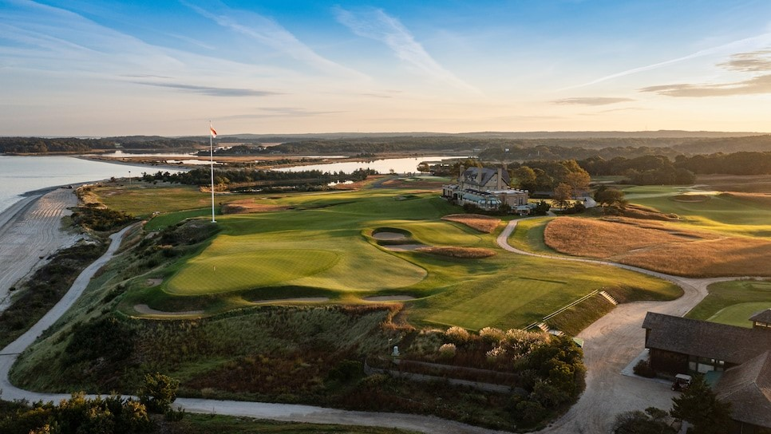
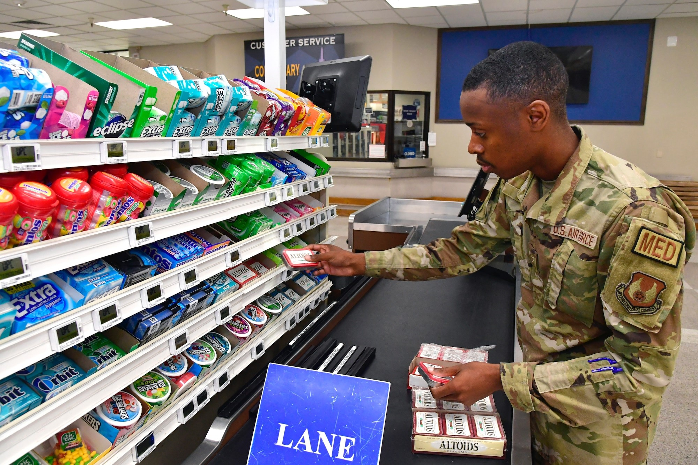
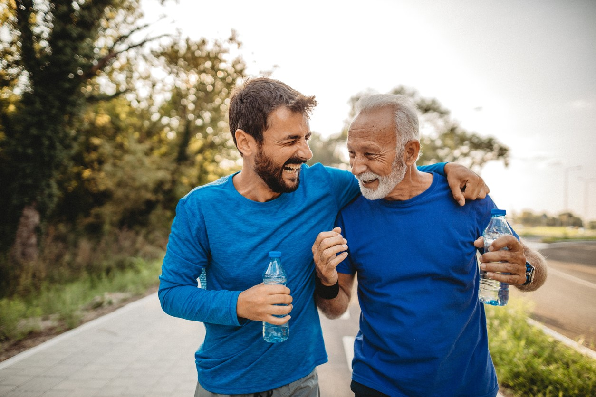

Jack Forey
Jack Forey (age 90) is a former member of the military. Born in San Antonio,
Texas, he enlisted in the military at the age of 18 and served for his entire life.
He would travel the United States while in training, enjoying the sights and
playing Golf (his favorite sports) all over the country. He met his wife Viva
while he was stationed in Florida, and then moved to Bellevue, Nebraska to
become the permanent manager of the Offutt AFB commissary. He retired in 1996
and continued to live in Bellevue, enjoying his retirement with his son, grandson,
and local family and friends.

A scenic golf course that Jack might've seen during his golf career.
Jack Forey has traveled across the United States of
America, both as a part of his job and in pursuit of
his greatest hobby - playing Golf. Being able to see
so much of the nation and play in a wide variety of
different courses is a huge achievement in his life.
For most of his working life, Jack was the manager of
the Offutt Air Force Base comissary. He worked closely
with his fellow soldiers and their families in order
to keep them happy and healthy, and took a lot of
pride in helping people.

A typical checkout isle at a military commissary.

Jack tries to go a short walk or run every day.
In his older age, Jack has put in a lot of effort to
keep himself active and healthy. While he's still
experienced a lot of the effects of aging - including
defeating a mild form of leukemia - he is rightfully
proud of how active he still is at the age of 90.